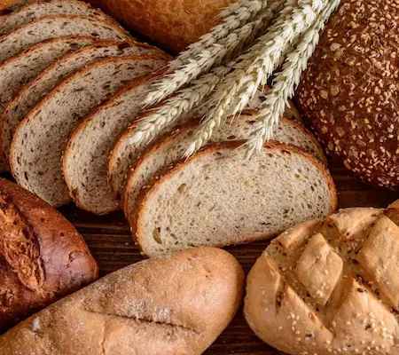
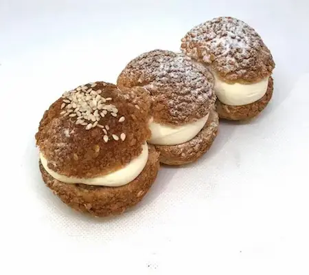
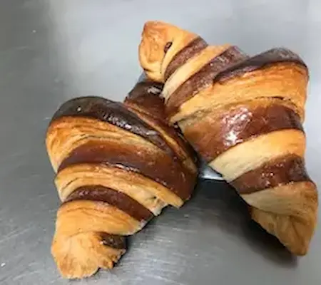

Boulangerie

La boulangerie est l'art de préparer et de cuire divers types de
pains, allant du pain de campagne rustique aux baguettes fines et
croustillantes. C’est une activité essentielle dans la culture
alimentaire de nombreux pays, où le pain fait partie intégrante de
chaque repas. Apprendre à fabriquer du pain maison permet de
découvrir le travail de la pâte, la fermentation et la cuisson
parfaite pour obtenir une croûte dorée et une mie légère et
aérienne.
Pâtisserie

La pâtisserie est un domaine culinaire délicat qui se concentre sur
la confection de douceurs sucrées telles que les gâteaux, les
biscuits, et les viennoiseries. Chaque recette est une œuvre d'art
qui demande de la précision et des techniques de cuisson raffinées.
Les pâtissiers combinent des ingrédients de qualité pour créer des
desserts irrésistibles, parfois avec des couches complexes de
saveurs et de textures, comme celles des desserts crémeux ou des
gâteaux fondants.
Viennoiserie

La viennoiserie inclut une gamme de produits de boulangerie
généralement associés à un petit déjeuner ou un goûter, comme les
croissants, pains au chocolat et brioches. Ces délices, souvent
feuilletés et fondants, sont réalisés à partir de pâtes levées
riches en beurre, offrant une texture légère et aérée. La
viennoiserie est un savoir-faire traditionnel français qui
transforme la simple pâte en un moment de plaisir à chaque bouchée.